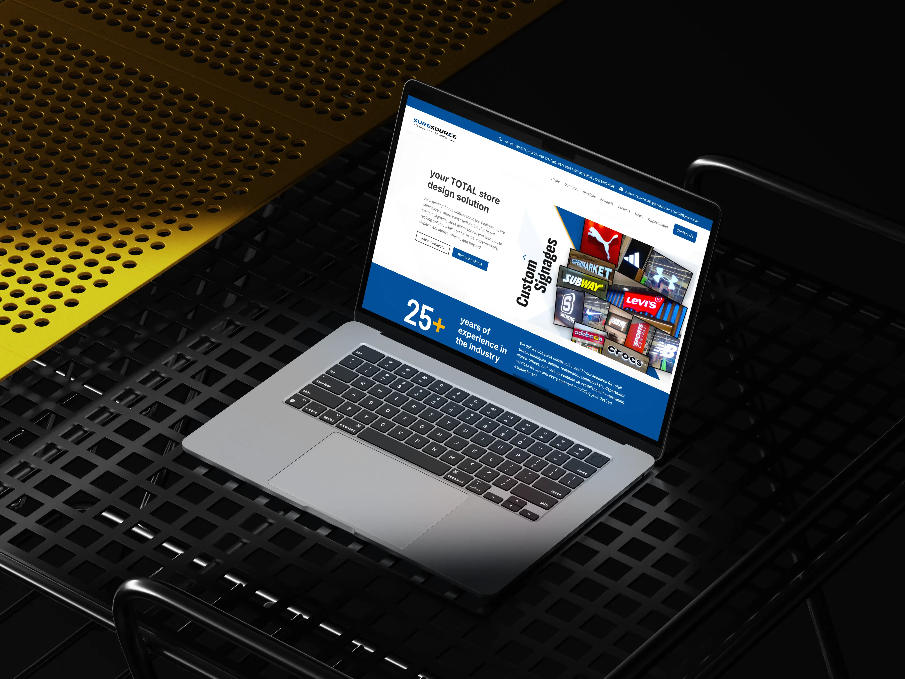
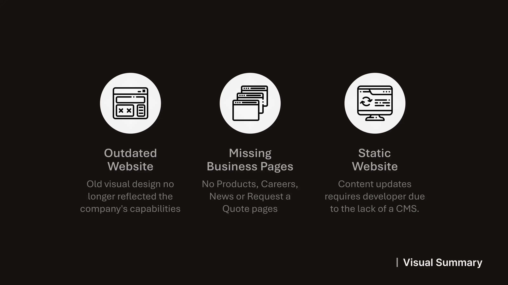
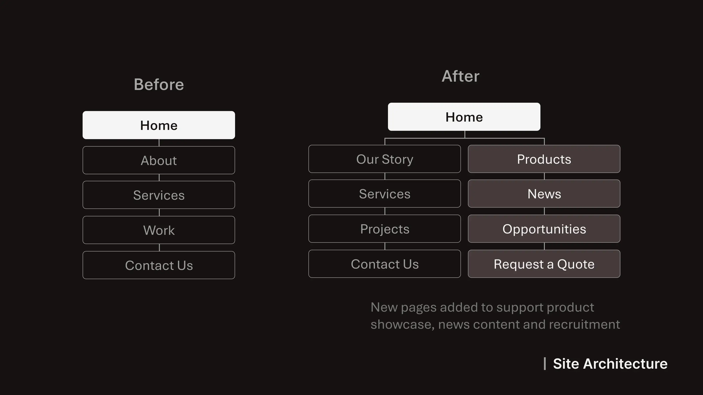
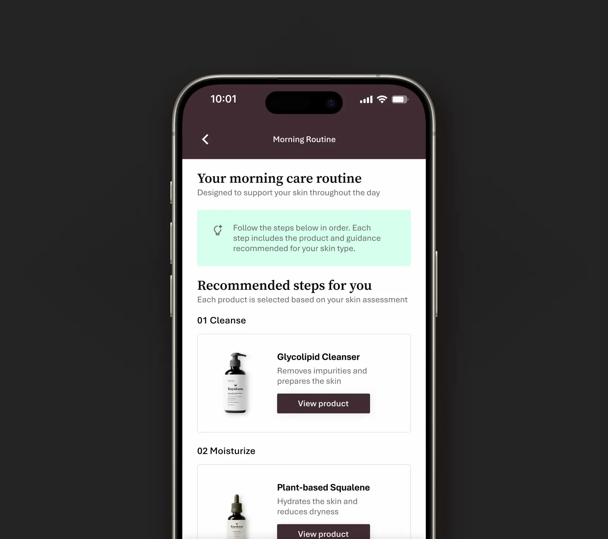
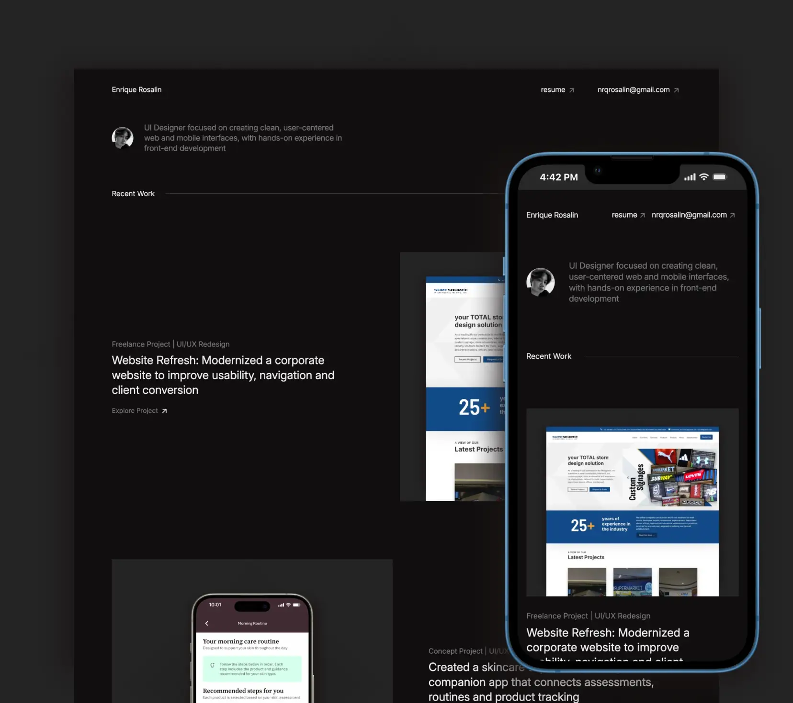

Freelance Client Project
Website UI Redesign

01. Project Overview
A colleague of mine based in Canada approached me for a UI design role for his Philippine-based clients' website redesign. The goal was to modernize its interface and improve overall structure. The project included updating existing pages and introducing new sections such as careers, news and a request-a-quote feature, while preparing the site for content management through WordPress.
- Role: UI Designer (Freelance)
- Scope: Website Redesign (5+ pages), UI Design, WordPress Implementation
- Tools: Figma, WordPress (Divi Builder), XAMPP, Trello, GitHub
02. Problem & Goals
The existing website lacked clear navigation, strong calls-to-action and a
modern visual structure, making it difficult
for users to explore services or initiate inquiries. Since the existing website is static,
updating the site was a challenge for the client, who wanted to be able to manage content
independently.
The goal was to redesign the site to improve usability, establish clearer information hierarchy
and support business
growth through additional pages and lead-generation features and to implement the design within
a CMS that would allow the client to easily update content and publish blogs themselves.
03. Constraints & Challenges

The project involved indirect communication with the client through my colleague (a developer), requiring clear alignment during feedback cycles. Working within WordPress using the Divi Builder introduced layout and customization limitations, while also requiring adaptation to a new development workflow. Time zone differences and first-time exposure to CMS-based implementation added additional coordination and learning challenges.
04. Research & Insights

Reviewed local and international construction company websites, along with client-provided competitors to understand common layout patterns and content structure. Many local sites had outdated designs, while stronger references demonstrated clearer hierarchy, simplified navigation and better use of visual sections that guides the direction for a more modern and structured redesign.
05. Design Exploration
Started with two homepage layout variations to explore different approaches to structure and content presentation. After aligning with the client on a preferred direction, the design was refined and extended across key pages, focusing on improving layout consistency and overall visual hierarchy.
06. Key Design Decisions
-
Clear Call-to-Action
Introduced a “Request a Quote” CTA to support lead generation and improve user direction. -
Improved Navigation Structure
Redesigned the navigation for better clarity and easier access to key sections. -
Stronger Visual Hierarchy
Organized content using structured layouts and clearer sectioning to improve readability. -
Expanded Site Content
Added new pages such as Careers, News, and Request a Quote to support business growth. -
Credibility Through Client Logos
Included partner/client logos to build trust and reinforce brand credibility.
07. Implementation Considerations

The design was implemented using WordPress with the Divi Builder, requiring adjustments to align with CMS capabilities and layout constraints. Worked closely with my colleague to ensure design consistency during handoff while adapting to a new workflow involving GitHub, Trello and local testing through XAMPP. He was very helpful in assisting me as this was my first time working with this technology.
08. Final Design
The final design focused on improving clarity, navigation and overall structure across key pages, while maintaining a clean and modern visual style. Updated layouts were applied consistently across the home page, about, services, projects and contact pages, along with newly introduced sections such as careers, news and request a quote.
09. Outcome
The redesigned website was successfully implemented and is currently live at suresource-inc.com reflecting the updated structure and visual improvements. The project also provided hands-on experience working within real-world constraints, collaborating with my colleague, a developer and adapting designs for CMS-based implementation.
10. Learnings
-
Designing Within Constraints
Learned how to adapt design decisions based on CMS limitations and technical considerations. -
Collaboration with Developers
Gained experience working with a developer and aligning design with implementation. -
Importance of Clear Structure
Improved understanding of how layout and hierarchy affect usability.
Other Works

Concept Project | UI/UX Design
Created a skincare experience through a companion app that connects assessments, routines and product tracking
Explore Project
Personal Project | Web Design & Development
Designed and built a responsive portfolio from scratch that combines UI design with front-end implementation
Explore Project